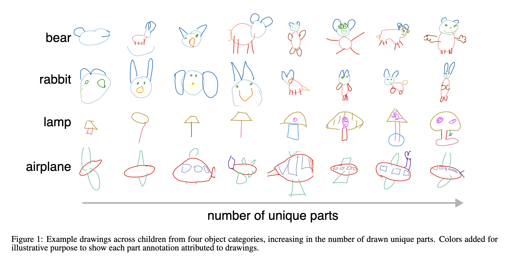
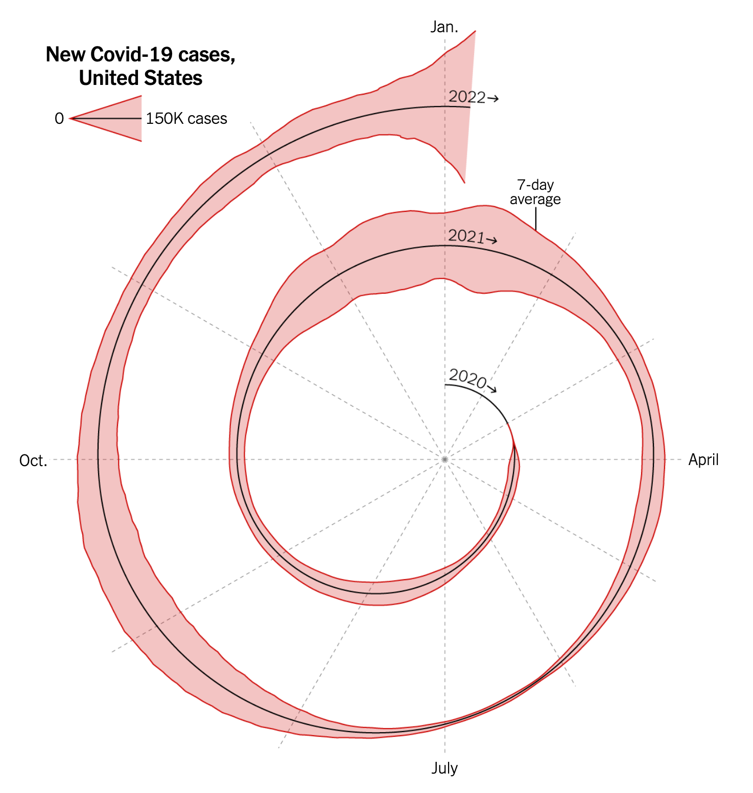

Introduction to Data Analysis and Visualization
Intersession 2024
Critiquing data visualizations
Questions to consider:
- What are the authors trying to convey? Are they successful?
- What features of the visualizations help/hinder getting the authors' point(s) across?
- Are there ways to simplify the visualization and get the same point(s) across?
- How would you present the same data?
Data visualization #1
From scientific publication: Huey, H., Long, B., Yang, J., George, K., and Fan, J.E. (2022). Developmental changes in the semantic part structure of drawn objects. Proceedings of the 44th Annual Conference of the Cognitive Science Society. Toronto, Canada: Cognitive Science Society.

Data visualization #2
From New York Times Article: Here's When We Expect Omicron to Peak. Jeffrey Shaman (January 6, 2022).
